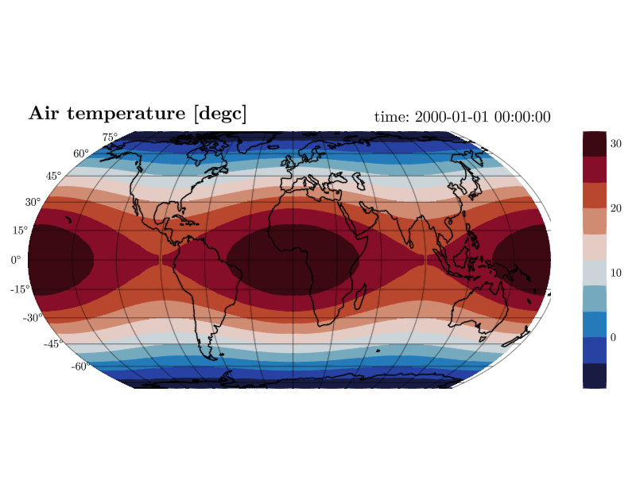

CDFViewer.jl
CDFViewer is an interactive viewer for NetCDF files and zarr stores. It opens a dataset straight from your terminal and lets you explore every variable with sliders, menus, and a command prompt. The same session produces publication-ready figures, animated recordings, and reproducible session exports, all rendered with GLMakie.

Features
- Open any NetCDF file or zarr store and get a plot with a handful of keystrokes, without writing a script or a notebook.
- A
CDFViewer>prompt with tab completion, persistent history, and reverse search drives the whole application from the keyboard. - Every setting is also available in a menu window with dropdown menus, sliders, and buttons. Both interfaces stay in sync.
- Nine plot types cover line and scatter plots, heatmaps, contours, 3D surfaces, and volume rendering.
- 2D fields can be drawn on geographic map projections with coastlines, land masses, and satellite imagery.
- Any dimension can be played like a movie and recorded to MP4, MKV, WebM, or GIF.
- ICON-style output on cell dimensions is interpolated on the fly, and external grid files are found automatically.
- The current view can be exported as a command line that recreates it exactly.
Quick start
git clone https://github.com/Gordi42/CDFViewer.jl.git
cd CDFViewer.jl
julia --project=. -e 'using Pkg; Pkg.instantiate()'
julia --project=. -e 'using CDFViewer; julia_main()' your_file.ncThen select a variable and a plot type at the prompt.
CDFViewer> v temperature
CDFViewer> p heatmapHead over to Installation for the full setup (including a compiled system image for fast startup) and to Getting Started for a guided tour.
Manual outline
- Installation covers installing, precompiling, and building a system image.
- Getting Started opens a file and makes a first plot.
- The Command REPL explains line editing, history, and completion.
- The Menu Window is the GUI counterpart of the REPL.
- Selecting Data describes variables, axes, and fixed coordinates.
- Plot Types shows all nine plot types with examples.
- Customizing Plots covers keyword arguments, colormaps, and maps.
- Animation and Playback plays dimensions and records movies.
- Saving and Recording exports figures, videos, and sessions.
- Unstructured Grids handles ICON output, interpolation, and grid files.
- Configuration documents the config file and environment variables.
- Command Line Options and REPL Commands are the full reference.